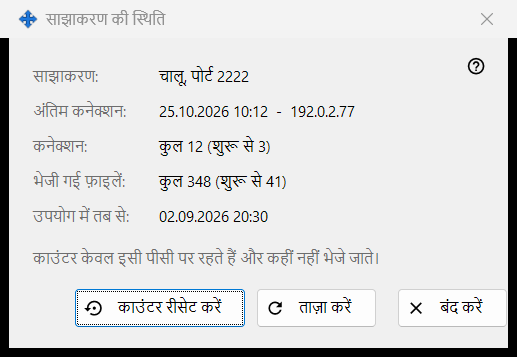
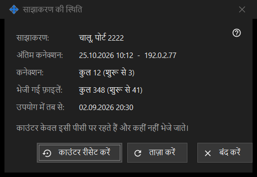

साझाकरण की स्थिति
यह किस लिए है
साझाकरण की मौजूदा स्थिति और उसके सरल काउंटर दिखाती है। यह मुख्य विंडो के आँकड़े लिंक से खुलती है।


इस क्रम में
- ऊपर स्थिति पढ़ें।
- अंतिम कनेक्शन, कनेक्शनों की संख्या और परोसी गई फ़ाइलें देखें।
- नए मान पाने के लिए ताज़ा करें दबाएँ।
- गिनती फिर से शुरू करने के लिए काउंटर रीसेट करें दबाएँ।
- बंद करें दबाएँ।
तत्व
स्थिति
साझाकरण: बताता है कि साझाकरण चल रहा है या नहीं और किस पोर्ट पर, या यह बंद है, या वर्कर उपलब्ध नहीं है। उपयोग में तब से: बताता है कि साझाकरण कब शुरू हुआ।
काउंटर
अंतिम कनेक्शन: आख़िरी फ़ोन का समय दिखाता है, या अभी तक नहीं। कनेक्शन: और भेजी गई फ़ाइलें: कुल संख्या दिखाते हैं और कोष्ठक में पिछली शुरुआत से अब तक की संख्या। काउंटर केवल इसी पीसी पर रखे जाते हैं और कहीं भेजे नहीं जाते।
ताज़ा करना और रीसेट
ताज़ा करें सर्वर से मान फिर पढ़ता है। काउंटर रीसेट करें पहले पूछता है: पिछले मान वापस नहीं लाए जा सकते। रीसेट विफल हो तो बटन पर रीसेट विफल रहा दिखता है। बंद करें विंडो से बाहर निकलता है।
प्रबंधक सेटिंग · SFTP साझाकरण सेटिंग · एक्सचेंज सर्वर सेटिंग